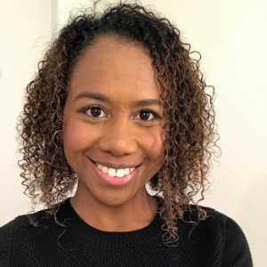
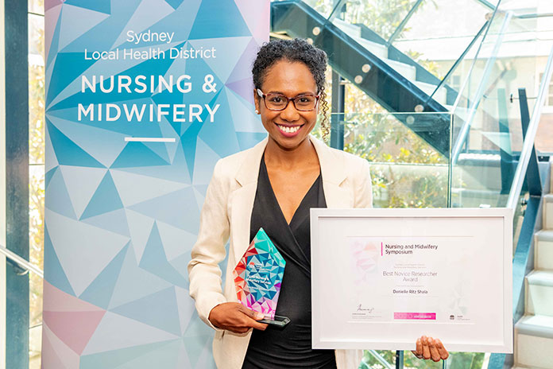

Bridging the chasm of expectations and reality with real-world projects
Danielle Ritz Shala ![]()

Danielle is a Clinician and Data Scientist with applied experience in the use of health data in clinical, research, and industry settings. She is focused on strategic, real-world application of data science and digital health to drive meaningful decisions and value in healthcare. She finds parallels in her stints in paediatrics, data, and technology: they’re (mostly) innocent, full of stories, innovative, and fun!
What makes working in intensive care different? For me, it’s the criticality of time, patient care, communication, technology, and priorities. Working in this type of environment forces people to prioritise ruthlessly and find efficient ways of doing tasks–partly to save time, but mostly to be ready and focused for the next unpredictable certainty (e.g. a baby who starts off crying like a rockstar and shortly turns blue, a toddler who’s woken up thrashing around and removing the breathing tube while the nurse was on break, a massive drop in blood pressure hours after a heart surgery, etc). As I was working clinically, I observed that copying and pasting is used by some clinicians to complete their electronic documentation quicker. Unfortunately, some would inadvertently enter a progress note on the wrong patient’s record, and others would forget to update a copied note with relevant changes in a patient’s status or therapy settings. As I experienced the reality of these risks on the floor, I noted there was a problem. I could see how the scenarios were generally a result of earnest efforts to use technology smartly and more efficiently, however there was also potential for unintended harm.
I have always been interested in the use (and perhaps misuse and abuse) of technology in healthcare, particularly its implications in real-world settings. I was attending local and international informatics conferences around 2017/18, and was also having informal chats with doctors and nurses about electronic medical record (eMR) documentation and efficiency in general, as I was curious to find out their experiences and perspectives. Through these discussions I realised that while most people assume redundancies, duplications, and copying and pasting happens “a lot” in clinical documentation, there was no measure, nor existing information around it—at least none that I could find in the local, state, or national level. This was another problem I noted. I believe discussions and decisions around eMR documentation and clinical practice would be more productive if guided by both data AND context—two constructs which I think should never be separated, particularly in healthcare. It was then that I became more interested in quantifying text similarity in clinical progress notes, and establishing a baseline measure for it in a local Australian setting.
At the time I was working part time as an ICU nurse, and part time as a research intern at the network, and towards the end of the internship, I proposed a research study and applied for grant funding to work on the study. I was also keen to learn new ways to explore and analyse data, and had just started the Health Data Science course at this time, so it was a perfect opportunity to apply university concepts to a project based on real-world experiences. The resulting study, Measuring text similarity and its associated factors in electronic nursing progress notes: A retrospective review1, was published in 2022 in the Journal of Clinical Nursing.
What did I learn from working on a real-world project?
Experience with real eMR data and manipulating messy datasets for a specific clinical context
For this study, I was given two separate datasets: one containing patient details, and another containing progress notes. It was quite messy as it contained notes for an entire patient stay, with varying note structures and lengths. At first it may sound fairly straignforward to identify text that has been copied and pasted, and the data scientist in us would be very excited to code some form of regular expressions (regex) or clustering algorithm to help in detecting the notes required—but consider that this is “a step to a step” which could also take time and would need testing depending on your level of programming experience and exposure to the text. In my case, I was early in my HDS programming journey.
I dedicated a period to run and test the first option, but noticed that there are notes that either get excluded or included which didn’t fit the study criteria. For example, if I filtered just by the category type (e.g. nursing progress note) and location (e.g. ICU), I ended up including notes from specialist nurses who visit ICU patients. Some of them may have a “Clinical Nurse Specialist” title in the system, others may have a “Registered Nurse” title. While some with the title “Registered Nurse” will do a progress note, not all of them will do a shift summary progress note for a patient. Some followed a specific format for writing shift summary notes, but others didn’t. It was definitely interesting for me to see the scenarios and variations of what happens in practice, and how these were reflected in the data!
Overall, I had to find ways to match the notes and filter down to only what I needed—this was a great way to apply what I knew as a clinician, what I was learning in Python and practically working with Pandas and numpy! I decided not to skip the manual task of annotating the relevant notes and classifying whether they were done in ICU or not. This meant checking over a thousand notes individually, confirming that they were indeed shift summary notes, done by a nurse, and in ICU. Supervised machine learning could be an alternative to this, but for most machine learning tasks, having correctly labelled data or the “ground truth” would be ideal. While this step took considerable time, it was definitely worthwhile, as it has allowed me to understand our practice deeper and learn more about the nuances of clinical text.
Starting with simple and practical methods to answer a question and fit a defined context
There’s a plethora of methods, studies, and repos that can address a question/problem these days (and there’s chatGPT too!). As more and more sophisticated programs and analytical techniques have sprung up in recent years, it’s easy to get excited and carried away by the next shiny library/tool and lose sight of the core question being solved. For me, the true challenge for a data scientist lies in finding the right fit for the problem at hand.
I read about different ways of calculating similarity—each had its own strengths, limitations, and implications. I tested and compared results across a few methods but found minimal differences in the results. After awhile I took a step back and reflected on the purpose and context of the study: from here, I settled on a method that might give results that are closer to the visual recognition of repetitive text, or mimic the feeling of “I think I’ve read that part!” among clinicians, as this relates more to the broader concerns of cognitive overload, efficiency, and value of text repetition in ICUs.
As it was an exploratory study, part of my goal was also to set a foundation that others may build on and contribute to the body of knowledge around the topic of electronic clinical documentation, especially for nurses. There’s lots of room for improving the study, but that in itself is part of the journey and the learning! This makes reflection on real-world findings, evidence-based recommendations, and learning different ways to tackle a question/problem possible.
Knowing the problem/question, the purpose and context of the work, and resisting the urge to reinvent the wheel is also useful. Where there are existing methods and libraries, build on them and get creative. One may gain theoretical/academic brownie points as with increasing the complexity of a program/solution, but that may also mean that it’s less applicable, reproducible, or practical in a real world setting. Breaking down problems and simplifying solutions are superpowers, and one can build on these skills by reflecting on work and progress regularly.

Working with engaged leaders and supervisors and communicating with other teams to progress goals
The endless possibilities of programming may be exciting to us data scientists, but that wouldn’t always translate to another person. Communicating technical concepts to non-technical groups or individuals was perhaps one of the most challenging and rewarding parts of the project for me. This is something that I definitely picked up in the real world, and something that I sought out to do, as I wanted to use my clinical background and early HDS skills to bridge gaps across clinical, technical, and leadership teams.
Learning to engage with key contacts from other departments is also important in the success of a project. For example, as I was preparing our ethics application, I sought advice from the research and ethics department and clarified points that we were unsure about. I learned a great deal about the process, and their team became acquainted with our project early on. It took a number of back and forth discussions with contacts but in the end, we saved considerable time as our application was approved on first submission. This would not have been possible without my supportive and empowering supervisor who was patient in listening to my ideas, and tremendously helpful in framing and consolidating them for applications and presentations. It’s always helpful to seek and receive feedback, particularly from experts who have already been through a similar process.
Another example demonstrating the importance of communication for the project was liaising with the medical records team. The initial dataset supplied to me was very large and didn’t look “right”. You’ll know this as you perform exploratory data analysis and find values that are either out of range or out of the context of your study. While I was excited that I’ve received the data (finally!), I knew I couldn’t use it for preparation and analysis yet, and had to have discussions with the person who extracted the data. Apart from going back to the data request form and project protocol, it was helpful for us to have meetings where we could walk through these together and quickly clarify questions. The extract took more time due to this, but in the end it worked out as the dataset was also halved and more aligned with the study requirements.
Overall, working on a project based on a real world healthcare setting was a great way for me to apply my domain knowledge as a clinician while refining my skills as a data scientist. I enjoyed the highs and lows of the project—both on the technical and “soft” aspects as it exposed me to a variety of scenarios and unforeseen challenges, and encouraged me to become more adaptable, creative, and focused in my approaches. I was thrilled when my work was recognised by the Sydney Local Health District named as the winner of the Best Novice Researcher Award. There are plenty of ideas and ideals we would like translated in the real world, but the cold hard truth is it isn’t as easy as “1,2,3” or “if A, then B.” The tools we have now and the bright promise of rapidly evolving techniques in data science will not be maximised if not applied to real world problems and data. I would highly encourage anyone to get involved and get their hands dirty with existing projects—apart from the opportunity to build on technical skills, it teaches a great deal of practical lessons about communication, project and time management, and collaboration which are all highly useful in driving projects forward, growing in your practice, having fun, and hopefully, making a difference!
Footnotes
Shala DR, Sheppard‐Law S. Measuring text similarity and its associated factors in electronic nursing progress notes: A retrospective review. Journal of Clinical Nursing. May 2022. https://doi.org/10.1111/jocn.16374↩︎